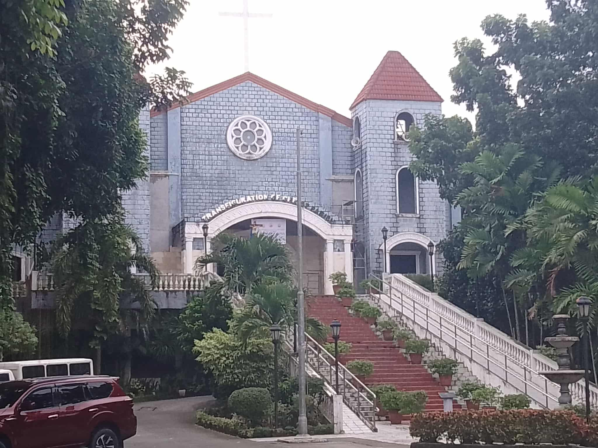
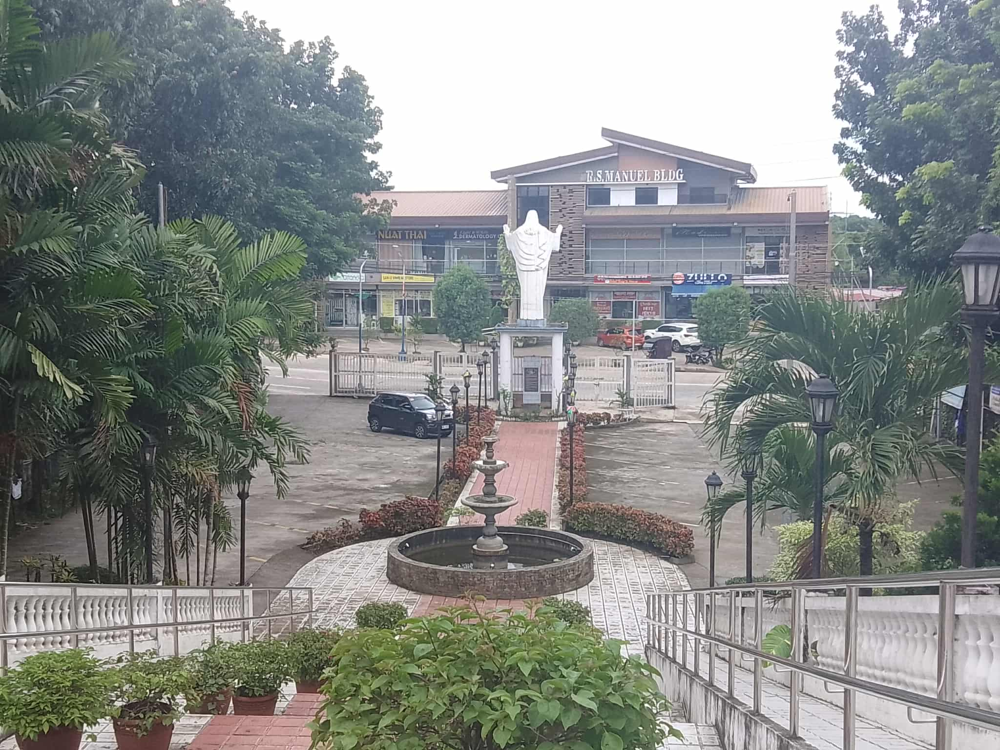
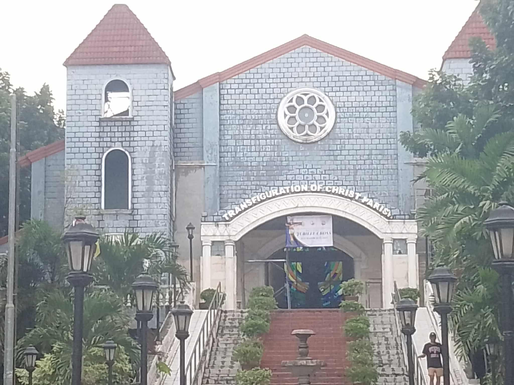
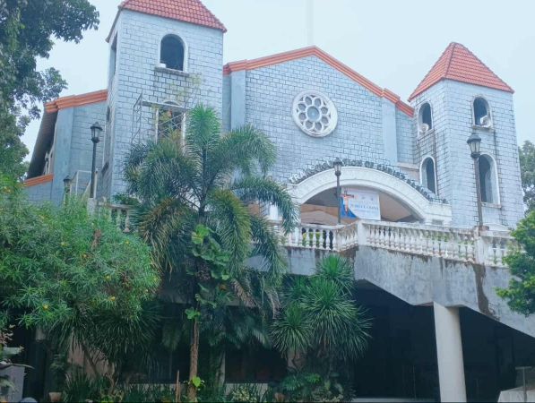
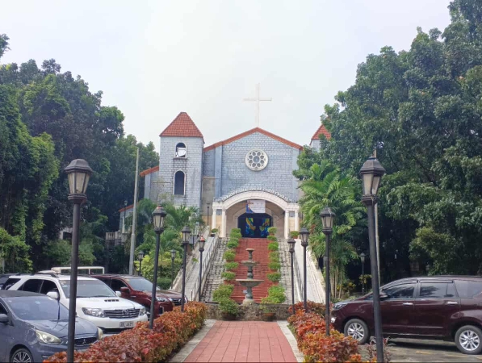
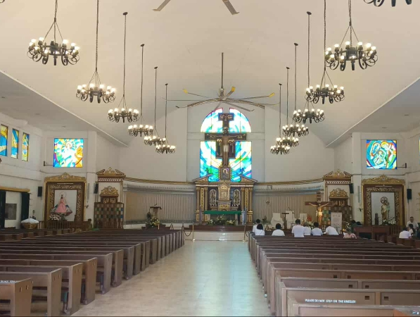
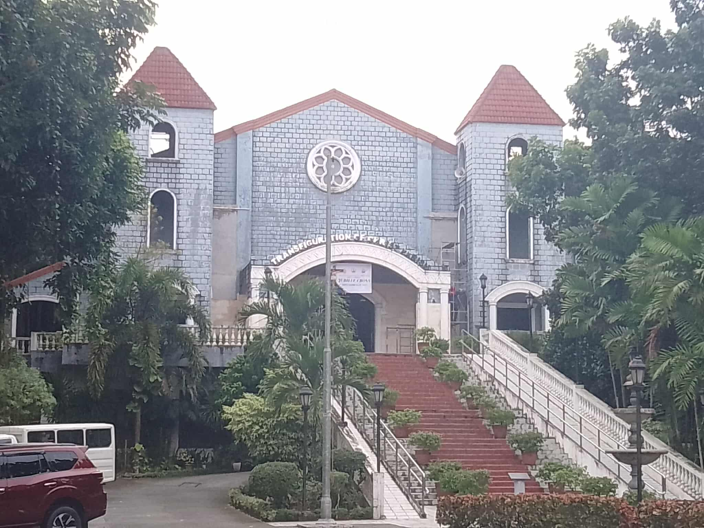

Transfiguration of Christ Parish Church
📍 View LocationDescription
The Transfiguration of Christ Parish Church in Antipolo was built and dedicated in 2012. The term "discovered" likely refers to the image of the Savior of the World in Cavinti, not the Antipolo church itself, which was found in a binayoyo tree in 1606 and led to the establishment of that parish, not the Antipolo one. The search results mention a different church in Cavinti with a history of a discovery of an image.It appears there might be a confusion between the Antipolo church and the Cavinti church. The image of the Savior of the World was discovered in a binayoyo tree in Cavinti, which then led to the construction of that church. The Transfiguration of Christ Parish in Antipolo City is a relatively new architectural gem, established in 2012, known for its grand staircase and impressive statue of the Transfiguration of Jesus Christ. The church features a spacious and serene interior suitable for spiritual reflection and ceremonies, with convenient, gated parking, and an accessible ramp. It also includes a columbarium and is a popular venue for large events like weddings, offering a blend of solemnity and style. The Transfiguration Of Christ Parish Church features an icon from the National Shrine of Our Lady of Czestochowa – the special patroness of the Transfiguration Parish is only fifteen years old. This serene and stunning church is preceded by a replica of the Transfiguration of Jesus Christ and requires a bit of a climb up a flight of stairs to reach. The church is situated at Manuel L. Quezon Ext, Nayong Silangan, Antipolo, 1870 Rizal. The Transfiguration Of Christ Parish Church was formally established on December 12, 2002. Located along Manuel L. Quezon Extension in Nayong Silangan, Antipolo, this church greets visitors with a significant statue depicting the Transfiguration of Jesus Christ. To reach the church’s entrance, visitors must ascend a long staircaseGallery





